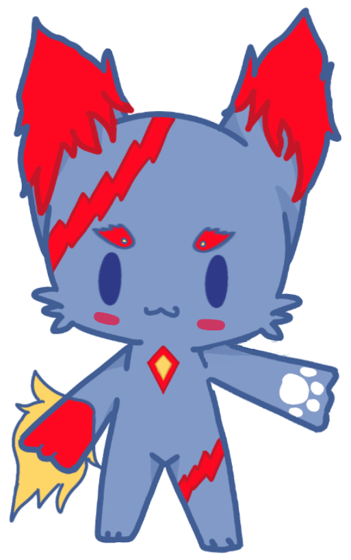

關於我們
小組理念
這個世界也許不完美，但正因為有了縫隙，那一線陽光才得以照進這裂縫，或許從表層看，這只是一項作業、一個學分，但我們可極度認真對待這份公益活動，在服務的同時我們也從中學習、成長，讓生命更豐饒。
當您決定購買我們的產品，便是對我們小組的肯定，也是令普仁得到一筆助人款項。普仁的存在是為了台灣的孩子，他們找到這社會上真正需要幫助的孩子，並讓您的愛心完全而直接的用在他們身上。
組員介紹
CEO
董建霖
座右銘:船到橋頭自然直。
在上企業概論課程的過程中，我因此受到薰陶與啟發，直接運用上課所學的專業幫助別人得到幸福，將這份心和精神傳遞出去，讓大家共同努力，就像撿海星的小女孩這個故事一樣，能救一個算一個、能影響一個人、能夠改變一件事就是非常有意義的事。專案執行時難免會遇到困難，但每每想到這不僅是一份功課而已，再經歷一次次的難題的沖刷，無奈地碰撞著生活所給的尖銳，但這些看似難捱的過程，終將會把我們刻劃獨一無二得樣貌。
說實話，沒接到這個專案我可能一輩子都沒辦法了解及認識普仁基金會這麼的深刻。我這才發現其實撇除經常在檯面上宣傳自己或被別人消費的基金會、慈善團體，檯面下員還台灣有這麼多的默默地人無怨無悔地真心付出，目的無他就只是要幫助這一些需要幫助的孩子們。
資訊部
王志翔
座右銘:做了才知道結果。
因企業概論這門課程，我被指派來製作此網站與其他資訊方面的工作，因為codeing算是我的興趣，所以學到了很多也不太會感到厭煩，接著在每一次的企概任務下我都能從中學習到新的專業技能，經歷這些後我相信我們都從中學到的很多。
接著我要說，因為任務是有期限的，平常又不常去codeing網站，所以每次一開始做就會做到很晚，也可以說很早(到早上)，所以我想說，真的很累，不過能學到很多，其實很累也是因為我是自己寫不是直接用線上模板製作呢，我的想法是如果不是自己寫的感覺就不能隨心所欲的codeing了，也會因此學不到網站真正的精隨，所以我從基本做起這個網站。美工部
盧怡臻
座右銘:無愧於心的做好一件事，不是很棒嗎
一開始接下這個任務，從不知從何著手到後來漸入佳境，那些開會跟熬夜討論的過程雖然並不是都甜美，但看到任務一步步前進，心裏更多的是一股踏實。跟CEO討論了好幾次的logo，原先想的跟實際畫出的東西總有點不同，不過確定的是這些互相提問、畫設計圖的認真絕不會白費。
任務進行中的許多夜晚，常與資訊部討論網站的設計，哪裡的背景、哪裡的插圖，該如何去呈現想傳遞的資訊內容，常為此而煩惱，可當構想完完整整呈現出來時，便會覺得一切的辛苦都是值得的!在所有畫出來的圖裡最喜歡感謝卡，紅底配上抓著感謝字卡的貓咪，以及點綴用的愛心們，希望可以妥善表達對於購買餅乾的感謝，並將這份誠意包裝好，即刻送出!
執行部
陳文成
座右銘:真正的高手不是不會輸，是懂認輸。
楊泓益
座右銘:只有自己才能打敗自己。
策略部
梁秋蓮
座右銘:雖然過去不能改變，但未來可以。
陳冠廷
座右銘:開始是成功的一半。